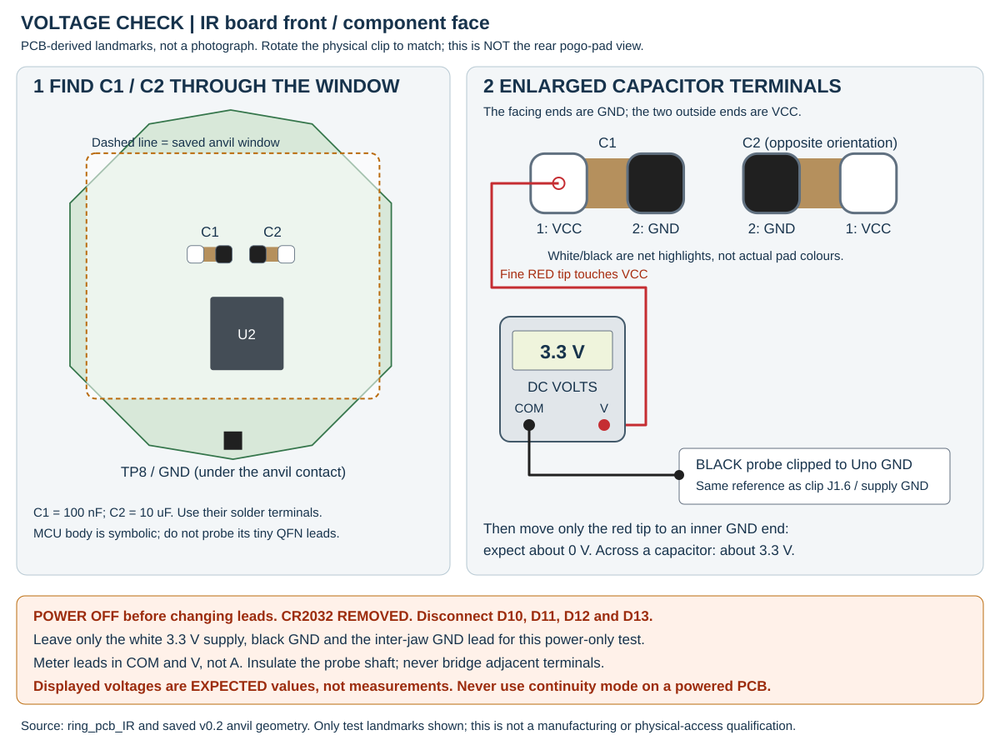

Lantern Ring / IR programming clip / 11 November 2026
ArduinoISP wiring, upload and voltage checks
The standalone PDF's wiring reference, physical-parts diagram and upload checklist, now as an offline HTML guide, with illustrated checks through the anvil window. This is for the ATtiny85 IR board, not the mono board, SWD or another target.
Before connecting anything
Disconnect USB and target power before changing leads, seating the ring, opening the clip or fitting capacitors. Use one suitable target supply and shared ground; never join supply outputs or backfeed, charge or solder a primary coin cell. Check the supply's current budget: existing firmware can drive IR LEDs immediately after reset.
Recorded successful programming:
after early 0x000000 reads and contact alignment, ArduinoISP
on COM6 identified 0x1e930b, wrote and verified 5320 bytes,
and a fresh whole-flash readback matched all 8192 bytes. EEPROM remained
unchanged. Only LF changed from 0x62 to 0xE2;
HF/EF/LOCK were preserved. The later 5 V rail report is distinct from
that earlier run's reported 3.3 V supply. IR function, contact life and
load/temperature qualification remain untested.
Evidence and hashes.
1. Cable colours and complete contact paths
These are the user-reported COM6 harness colours, not colours inferred from older photographs. Label both ends with signal and J1 number. Confirm continuity instead of trusting colour alone. White lines are outlined for visibility on paper.
| Lead | Uno / selected supply | Probe J1 | Contact path inside the clip |
|---|---|---|---|
| Grey | D12 / MISO | 1 / MISO | P2 pogo to rear TP2 / PB1 |
| White | Uno 5V target VCC, battery removed | 2 / VCC | P9 pogo to rear TP9 / VCC |
| Blue | D13 / SCK | 3 / SCK | P3 pogo to rear TP3 / PB2 |
| Purple | D11 / MOSI | 4 / MOSI | P1 pogo to rear TP1 / PB0 |
| Brown | D10, not Uno RESET | 5 / RESET | P6 pogo to rear TP6 / PB5 |
| Black | GND, shared with target supply | 6 / GND | Probe J2 to insulated wire to anvil J1 to front TP8 |
The separate black inter-jaw wire is essential. The upper pogos cannot reach front TP8. Earlier anvils use P8; v0.2 uses P8L and P8R, both on GND. Their flat contacts must touch the front ground bar. The fence is mechanical; the second probe is an unpopulated guide. TP4/PB3 and TP5/PB4 are spare, not additional ISP signals.
Header orientation: looking down onto the populated probe
extended front / header edge
2 VCC 4 MOSI 6 GND
1 MISO 3 SCK 5 RESET
^
confirm silkscreen pin 1
pogo grid / jaw slotsThis is the board-top view, not the cable mating-face view, which is mirrored. J1 is unshrouded and not keyed. Female Dupont leads fit its 2.54 mm mating posts, not the splayed solder lands (5.05 mm row spacing) or the separate 3.05 mm pogo grid. TP9 is off-grid.
2. Physical parts and separate wire lanes

Seat the IR ring rear pads up, LEDs/components down, with its front ground bar against the anvil. The post numbers above identify where to attach leads; the PCB and guide, not cable tension, should locate the contacts. Provide strain relief so Dupont leads cannot peel the SMD header pads.
3. Arduino IDE setup and upload checklist
Prepare the Uno with the ring disconnected
- Unplug USB/target power and remove the target connections.
- Select Arduino Uno and Port COM6. Open File > Examples > 11.ArduinoISP > ArduinoISP and use normal Upload to load the programmer sketch onto the Uno.
- Close Serial Monitor. This prepares the programmer; it does not upload the ring firmware.
Select the ATtiny target
The locally verified attiny 1.0.2 package
(attiny:avr) supplies these menu names. Arduino AVR Boards
is also installed. Open
firmware/Arduino-TV-B-Gone/Arduino-TV-B-Gone.ino.
| Setting | Value |
|---|---|
| Tools > Board | attiny > ATtiny25/45/85 |
| Tools > Processor | ATtiny85 |
| Tools > Clock | Internal 8 MHz, only when actual fuses match |
| Tools > Port | COM6 |
| Tools > Programmer | Arduino as ISP, not ArduinoISP |
| Upload action | Sketch > Upload Using Programmer |
Clock configuration is separate from compilation
The IR board has no external crystal/resonator footprint. Its firmware's delay loop is calibrated for 8 MHz; Internal 1 MHz is not equivalent. Do not select External 8 MHz because a legacy source comment mentions a resonator. A factory ATtiny85 normally runs its internal 8 MHz oscillator divided by eight, giving 1 MHz. Selecting the IDE clock menu does not change existing fuses.
0xE2, HF=0xDF, EF=0xFF.
Back up firmware/EEPROM first if needed. Do not select an external clock
or disable RESET/SPI. Routine uploads do not need this step.
In the recorded run, fuses read LF=0x62, HF=0xDF,
EF=0xFF, LOCK=0xFF; only LF changed to
0xE2, with every value checked by fresh readback.An offline build with
attiny:avr:ATtinyX5:cpu=attiny85,clock=internal8 passed:
5320 bytes flash and 4 bytes static RAM. This verifies compilation,
not IR timing. The separate hardware transfer and full readback also
passed. Its real backup/minimal-fuse/readback sequence is documented in
the repository programming skill.
Connect, identify, then write and verify
- With power off and CR2032 removed, verify every cable, the separate ground return and VCC/GND shorts. Complete the voltage checks below.
- Resolve supply and signal levels, close the clip and apply suitable target power. After a power-only test, power off before reconnecting the qualified ISP signals.
- With avrdude installed, this is a read-only identity check for standard ArduinoISP:
avrdude -c stk500v1 -p t85 -P COM6 -b 19200 -nRequire repeatable signature 0x1e930b.
Never use -F to force a mismatch. Only then deliberately
configure any necessary clock fuses and use
Sketch > Upload Using Programmer. Require successful
writing and verification, not just compilation.
Power off before opening the clip; detach programmer leads before
reinstalling the CR2032.
4. Measure PCB power through the anvil window
Use C1 (100 nF) or C2 (10 uF) solder terminals on the front/component face, if accessible. Do not probe the tiny MCU leads. Both capacitors have pad 1 = VCC, pad 2 = GND, but they are oppositely oriented: the ends facing each other are GND; the outside ends are VCC. Confirm the component references and rotate the assembly to match the front view below rather than assuming a left/right pin.
Why document 5 V now? The user reports the Uno 5 V target rail working in practice; it also matches Uno signal levels. The earlier 3.2 V capacitor reading was sufficient for the ATtiny85-20M at 8 MHz: its supply rating is 2.7-5.5 V, with operation up to 10 MHz specified at 2.7 V and above. The user reported 3.2 V across a front capacitor; if this was C1 or C2, that is compatible with the MCU supply rating. It is not an independently verified measurement or evidence of reliable ISP contact. See the Microchip datasheet. This historical 3.3 V setup is not the current default. Ordinary I/O pins, excluding RESET, have an absolute maximum of VCC + 0.5 V: about 3.7 V at a 3.2 V supply. This is a damage limit, not a recommended signal level; 5 V Uno signals remain outside it.

- Power off first. Remove USB and any target supply, keep the CR2032 out, then unplug the four ISP signal leads: brown D10, purple D11, grey D12 and blue D13. Leave white Uno 5 V, black GND and the separate inter-jaw ground wire connected. This prevents phantom power through the signal pins.
- Put the meter leads in COM and V, not a current socket. Select DC volts, auto range or 20 V range. Insulate the probe shaft so only a fine tip is exposed.
- Clip the black probe to Uno GND. Apply the single suitable 5 V supply and touch only the red tip to the accessible capacitor solder terminals. Do not bridge them or disturb the clip.
| Red probe point | Expected | Purpose |
|---|---|---|
| C1.1 or C2.1 / VCC | About 5 V | Checks that power reaches the ring, not merely the header |
| C1.2 or C2.2 / GND | About 0 V | Checks the target ground relative to programmer ground |
| Across the two terminals, if safely accessible | About 5 V, red on VCC | Confirms the local MCU supply difference; the one-probe method above is less likely to short pads |
Both terminals near the supply voltage suggests a missing ground return. A correct voltage at header J1.2 but a low VCC reading at the capacitor suggests a poor VCC contact or another supply/load fault. Unstable readings that change with seating suggest unreliable contact; do not flash while moving or squeezing the assembly. Power off to reseat; do not raise the supply voltage to compensate.
Continuity checks: all power removed
Disconnect USB and every other source before selecting resistance or continuity mode. Compare readings to the meter's shorted-lead resistance; a beep alone may accept too much resistance. Check with the clip closed:
- Ground: capacitor GND to Uno GND through front TP8, the anvil contact, anvil J1, the inter-jaw wire, probe J2 and J1.6.
- VCC: capacitor VCC to probe J1.2 through rear TP9 and P9. It should be close to the shorted-lead reading.
- MISO: grey D12 to J1.1, P2 and rear TP2. Verify the other ISP rows and check adjacent pins for shorts too.
Never use continuity or current mode across a powered PCB. Power off before changing connections. Passing these tests does not qualify direct 5 V Uno signals for a 3.3 V target.
5. If the target does not identify
ArduinoISP reporting 0.0 V is not a voltage measurement. The standard sketch does not measure the target supply. Use the meter at the actual board as above. Similarly, a programmer response or "initialized" message does not establish a valid target signature.
Signature 0x000000: check target power, ground return, header orientation, reset, MISO/SCK contacts and the target clock. This result alone does not prove a dead MCU or identify which contact is wrong. Do not override the signature or write fuses to guess a fix.
Uno resets: after loading ArduinoISP, it may need a 10 uF electrolytic between its own RESET (+) and GND (-), not target RESET. Fit/remove it unpowered, and remove it before re-uploading to the Uno. Do not add it across the supply or an ISP signal.
Very slow target clock: reduce SPI_CLOCK
in ArduinoISP and re-upload the sketch to the disconnected Uno if
necessary. Do not assume avrdude -B changes the clock
compiled into ArduinoISP. COM6 uses 19200 baud for standard ArduinoISP.